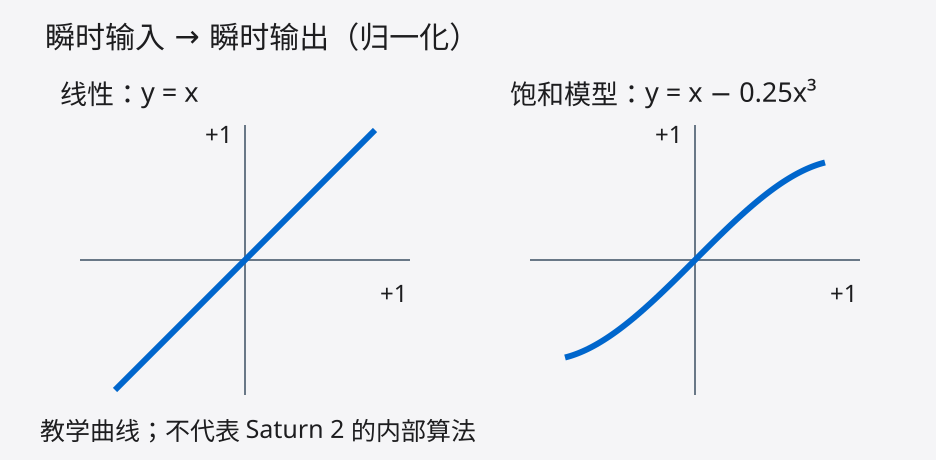
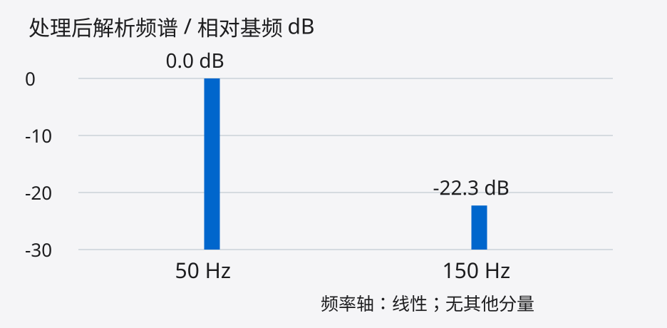
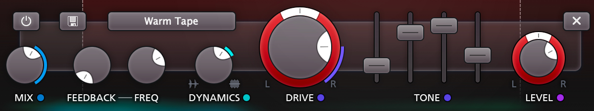
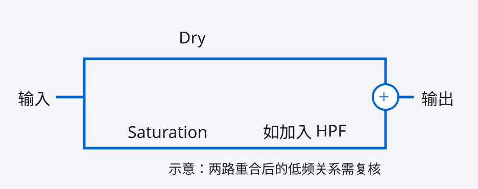
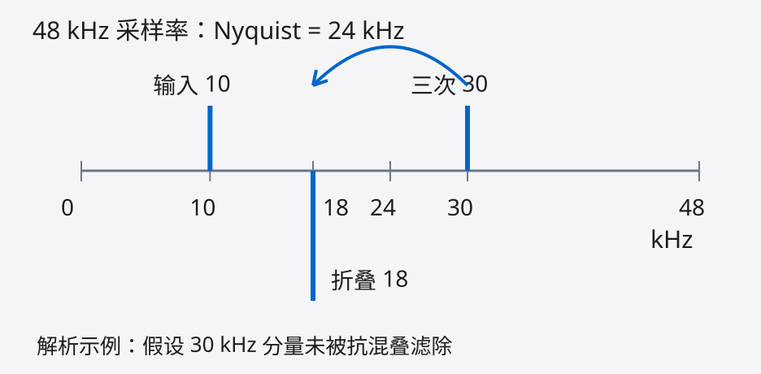

用少量饱和，试着提升底鼓辨识度。
01 / 10
在线性且不削波的路径中，+6 dB Gain 使幅度约变为 2 倍。

上图以 y=x 与 y=x−0.25x³ 对比线性和饱和。
“更饱满”仍需在输出补偿后验证。
非线性会生成新的频率成分。

三次谐波 / 基频 = 1/13
相对电平约 −22.3 dB
以纯正弦和三次曲线为例，谱图以处理后基频为 0 dB。真实底鼓的变调、瞬态与噪声也会影响结果。
同一模型，完整周期的解析结果。
| 原始 | 处理后 | 补偿后 | |
|---|---|---|---|
| Peak dBFS | 0.00 | −2.50 | −0.72 |
| RMS dBFS | −3.01 | −4.79 | −3.01 |
处理后 → 输出补偿 +1.78 dB → 同 RMS
同 RMS 不等于同感知响度。表中为纯正弦模型的解析峰值，满刻度幅度 = 1。实际底鼓的余量与 True Peak 需结合素材检查。
以 FabFilter Saturn 2 为例，先认识频段控件。

首次用单频段，暂不同时调整 Dynamics、Tone、Feedback。
带上底鼓、贝斯和主要伴奏。
一次只改一个变量，听到变化后可稍回退。
拉近旁通与处理后的主观响度，表头作辅助。
可辨认？起音利落？低频仍稳？
每次改变 Mix，
都重新匹配电平。
短促底鼓不宜只凭一个 LUFS 数字裁定。
同 RMS 也不保证同感知响度。
若更厚却更钝，试减 Drive 或少量并行。
把单频段、低 Drive 作为试听起点。

依次听：旁通 → 处理 → 合并 → 单声道。
分频点由底鼓和贝斯关系决定。先排查异常削薄，再决定要不要保留处理。

High Quality 控件
Saturn 2 过采样档位，
代价包括更多 CPU。
过采样减少内部饱和算法的混叠，
不保证所有失真都会消失。
上图以 10 kHz 分量产生的三次谐波为例，假设 30 kHz 分量未被滤除。底鼓点击声也含高频。
Linear Phase 仅覆盖分频与过采样滤波。
换模式后重听瞬态，并检查延迟补偿。
能解释收益，也能听到代价，
才留下这一步。
如果只是更响时才觉得更好，
重新配平，再听一次。
Drive 随素材调整。改变音色、编配或包络，也可能比继续叠处理直接。
研究、解析计算、图解与可编辑 HTML
github.com/DDDPG/
music-mixing-secrets
@misc{wang2026musicmixingsecrets,
author = {Kangdi, Wang},
title = {Music Mixing Secrets},
year = {2026},
url = {https://github.com/DDDPG/}
# {music-mixing-secrets}
}Ableton Live 12 Manual · Saturator
FabFilter Saturn 2 Help · Band Controls / Input & Output
FabFilter Press Area · 产品界面 © FabFilter
纯正弦、Peak / RMS 与混叠图解的公式、计算代码和完整来源，见配套研究报告与源码。
FabFilter 界面版权归原作者所有；素材来源与许可记录随源码保留。